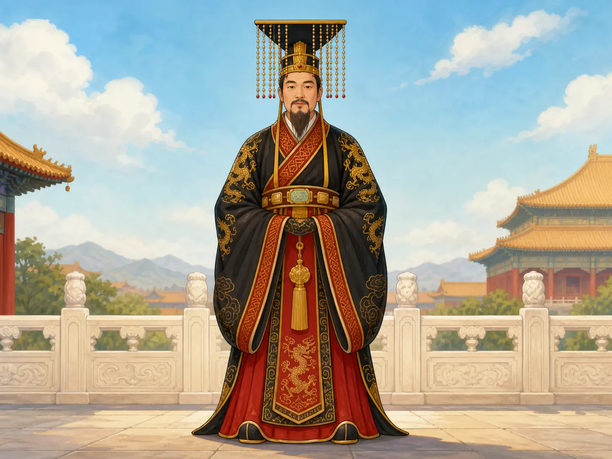
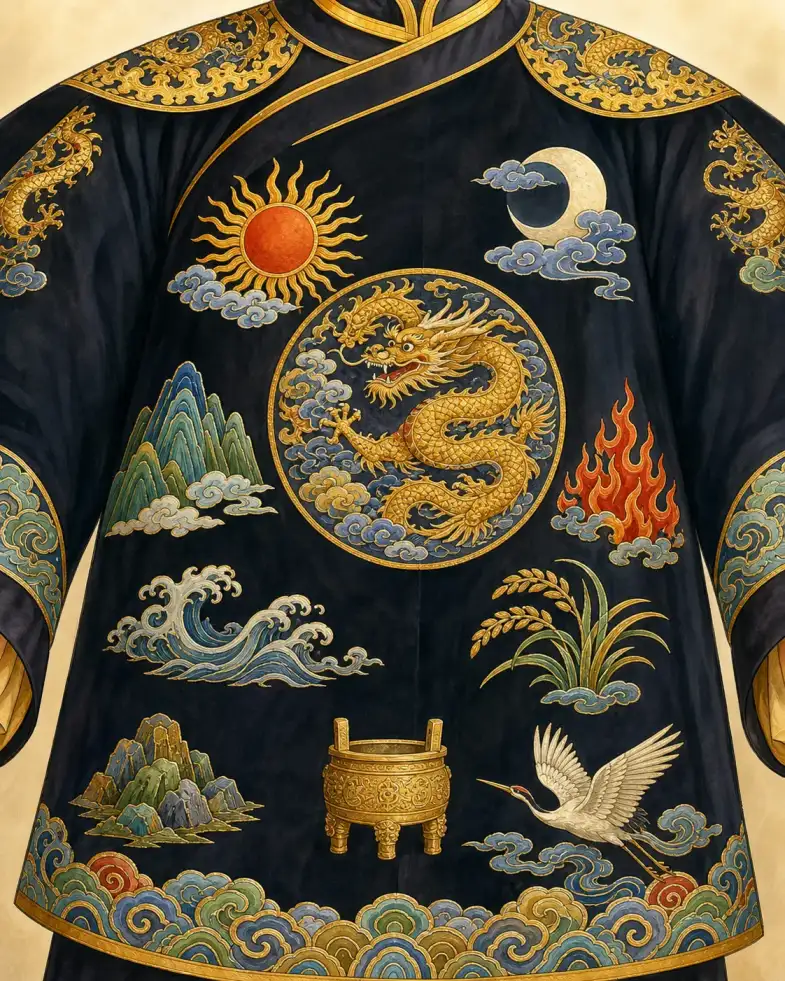
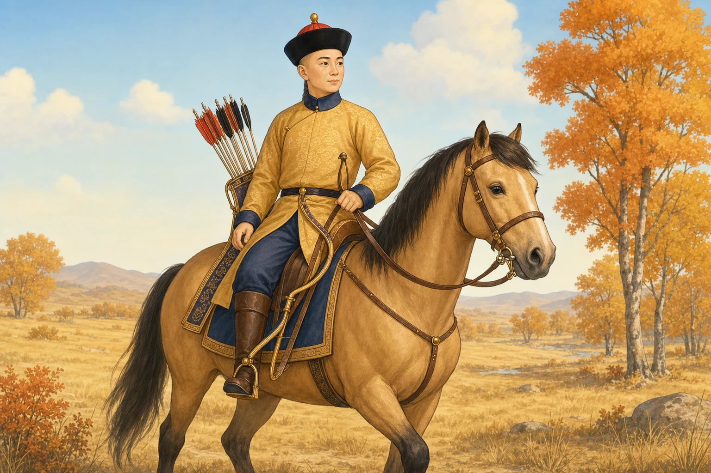

一件黄衣服能证明什么？
What Can a Yellow Robe Prove?
阅读难度 · 中等Reading level · Medium
Page 1
第一条线索：黄色
Clue One: Yellow

This modern imagined scene combines a generalized ceremonial crown, a dragon-patterned robe, and the Forbidden City. It is not an exact reconstruction of one dynasty’s imperial dress.
博物馆库房里出现一件黄色丝袍。没有标签，只知道它来自中国宫廷。你能不能马上宣布：“这是皇帝的龙袍”？一位服装侦探不会急着回答。他会先问：是哪一种黄？什么朝代？衣服上有哪些纹样？它在什么场合穿？谁原来收藏或使用过它？
黄色和皇权的联系是慢慢形成的，并不是秦始皇选了一件黄袍，从此每朝皇帝都照样穿。唐代史书说，唐高祖把赭黄色袍衫作为常服，后来又限制官民使用某些赤黄色；可同一套制度中，普通人的服色也曾包括黄与白。这提醒我们：被限制的可能是具体色调、材料和场合，不能把“所有黄色永远只准皇帝用”倒推到整个历史。
到了明清，黄色和宫廷权力的联系更强，但规则仍然有细节。清代制度把明黄、杏黄、金黄等近似颜色分给不同等级；明黄色也可用于皇太后和皇后。皇帝举行不同祭祀时，朝服还可能用蓝、红或月白色。于是，黄色是一条重要线索，却不是结案证据。
A yellow silk robe appears in a museum storeroom. Its label is missing, and all anyone knows is that it came from a Chinese court. Can you announce at once, “This was an emperor’s dragon robe”? A clothing detective would slow down. Which shade of yellow is it? From which dynasty? What patterns appear on it? When was it worn? Who once used or collected it?
The link between yellow and imperial power developed gradually. It did not begin when Qin Shihuang chose one yellow robe that every later emperor copied. Tang histories say that Emperor Gaozu used reddish ocher-yellow robes as regular court wear and that some red-yellow shades were later restricted. Yet the same body of regulations also lists yellow and white among colors worn by common people in some contexts. The restriction could depend on the exact shade, material, and occasion. We cannot push one simple rule backward across all of history.
By the Ming and Qing dynasties, yellow had a stronger courtly and imperial connection, but details still mattered. Qing rules distinguished bright yellow, apricot yellow, golden yellow, and other nearby shades by rank. Bright yellow could also be worn by the empress dowager and empress. For certain sacrifices, an emperor’s formal robe might instead be blue, red, or pale moon-white. Yellow is an important clue, but it does not close the case.
Page 2
第二条线索：龙有几只脚趾？
Clue Two: How Many Claws Does the Dragon Have?
侦探接着数龙爪。清代宫廷服饰制度会区分正龙和行龙：正龙把脸转向观者，行龙从侧面扭动。朝袍、吉服袍和外罩的褂，龙的数量、位置与姿态并不完全一样。一件清代皇帝的吉服袍通常规定九条金龙，其中一条可能藏在衣襟里面。衣服不是平铺给博物馆观众看的，人在行走、转身时，纹样才会随着身体展开。
五爪当然重要，但“五爪龙等于皇帝”还是太快。清代一些皇室成员也可使用五爪龙或五爪蟒，规则还会受到爵位和特赐影响。纽约大都会艺术博物馆收藏的一件五爪龙袍，就被判断为皇室成员所用；因为它缺少皇帝服装上的整组十二章，不能只凭龙爪把主人认成皇帝。
更不能把清代的爪数规则套到唐、宋、元、明每一件龙纹衣服上。龙的画法、名称、使用人群和服装制度都会变化。真正的判断要把年代、剪裁、色彩、纹样组合、档案和传承记录放在一起；只数脚趾，像只读侦探小说的一个字。
Next, the detective counts claws. Qing court dress rules distinguished front-facing dragons from dragons shown twisting in profile. The number, position, and pose of dragons could differ on formal court robes, festive robes, and outer coats. A Qing emperor’s standard festive dragon robe usually called for nine golden dragons, with one sometimes hidden on the inner flap. The garment was made to move on a body, not lie flat in a museum case; patterns appeared and disappeared as the wearer turned.
Five claws matter, but “five claws equals emperor” is still too quick. Some Qing imperial relatives could also use five-clawed dragon or python designs, depending on rank and special grants. One five-clawed robe at the Metropolitan Museum is identified as belonging to an imperial family member. Because it lacks the full group of Twelve Symbols found on an emperor’s robe, claws alone do not make its wearer the emperor.
Qing claw rules also cannot be pasted onto every dragon garment from the Tang, Song, Yuan, and Ming dynasties. The way dragons were drawn, named, and assigned changed along with court dress systems. A careful identification combines date, cut, color, pattern group, documents, and ownership history. Counting claws alone is like reading one word of a mystery novel.
Page 3
第三条线索：十二章真的都在吗？
Clue Three: Are All Twelve Symbols Really There?

This modern imagined design gathers the sun, moon, mountain, dragon, fire, grain, and ritual vessels in one place. Its layout does not copy a surviving robe, and the white crane is not the “flowery bird” named in the classical Twelve Symbols.
古代《尚书》列出日、月、星辰、山、龙、华虫、宗彝、藻、火、粉米、黼、黻十二种章纹。后人把它们解释为光明、稳定、变化、滋养和分辨等治国品德。这里的“华虫”通常解释为有彩色羽毛的鸟，并不是所有画着鸟的衣服都有十二章。
这份古老文字首先给我们的是一种礼制理想：最高统治者的服装应该把宇宙、祭祀和责任穿在身上。可是，从经典中的理想，到某一朝的法令，再到真正织成的一件袍子，中间还有很长的路。明代定陵出土过标明为“衮服”的十二章纹衣物；清代博物馆也保存着十二章朝袍和吉服袍。它们的衣形、章纹位置和穿用方式并不相同。
更有意思的是，清代制度文字常把十二章说成皇帝标志，宫廷里却保存了带十二章的女性礼服实物。皇太后、皇后等女性也有自己的朝服和吉服，衣形、配套和使用场合都有规定，不能全叫作“皇帝龙袍”。当文字规定和存世实物没有完全对上时，侦探不能藏起其中一边；差别本身就是历史证据。
The ancient Book of Documents names twelve emblems: the sun, moon, stars, mountain, dragon, flowery bird, ritual vessels, waterweed, fire, grain, axe, and paired fu sign. Later interpreters connected them with qualities such as illumination, steadiness, adaptability, nourishment, and judgment. The “flowery bird” is usually understood as a colorful pheasant-like bird; not every robe with any bird on it carries the Twelve Symbols.
The old text first gives us a ritual ideal: the highest ruler should wear images connecting the cosmos, sacrifice, and responsibility. But there is a long path from a classical ideal to one dynasty’s regulations and then to a garment actually woven. Twelve-symbol garments labeled as gunfu were excavated from the Ming Wanli emperor’s tomb. Museums also hold Qing formal and festive robes with the symbols. Their cuts, symbol placements, and uses are not identical.
There is another twist. Qing regulations often describe the Twelve Symbols as an emperor’s mark, yet court collections preserve women’s robes that carry them too. Empress dowagers and empresses had their own formal and festive clothing, with different shapes, sets, and occasions. Those garments should not all be called “the emperor’s dragon robes.” When written rules and surviving objects do not match perfectly, a detective keeps both pieces of evidence. The gap is part of the history.
Page 4
一件“龙袍”，究竟什么时候穿？
When Was a “Dragon Robe” Actually Worn?
电视剧常让皇帝整天穿同一件金灿灿的衣服，真实的清代衣柜却按任务分工。朝服用于朝会、祭祀和重大典礼，是等级最高的一类礼服；吉服用于节庆、宴会等喜庆或仪式场合，人们平常说的清代“龙袍”常指吉服袍。常服用于较日常的宫廷活动，行服方便出行，雨服挡雨，戎服和骑射相关服装又有自己的需要。
“衮服”和“冕服”也不能随意互换。以明代为例，皇帝的衮冕是一整套最高等级礼服，包括冕冠、衣裳、带、鞋和其他部件，用于祭祀、重要朝会与册封等场合。到了清代，同一个古老词语可能被放进不同剪裁和制度中。只看现代戏服，很容易把相隔几百年的帽子、袖形和纹样拼成一套从未存在过的制服。
衣服的功能还会改变它给人的动作感。宽大礼服让身体在仪式中显得稳定庄重，窄袖骑装则便于拉弓和控马。可是，方便活动不表示皇帝在猎场就成了“普通人”；随从、器物、服装等级和整场活动仍在显示权力。
Television often keeps an emperor in the same glittering robe all day. A real Qing wardrobe assigned different clothes to different jobs. Court dress was the highest formal category, used for audiences, sacrifices, and major ceremonies. Festive dress was used for celebrations, banquets, and other ritual occasions; the Qing garment casually called a “dragon robe” is often a festive robe. Regular court dress served more ordinary palace activities, travel dress made journeys easier, rainwear kept out weather, and military or riding clothes answered other needs.
The terms gunfu and mianfu should not be swapped carelessly either. In the Ming dynasty, for example, the emperor’s gunmian was a complete highest-ranking ceremonial set: crown, upper and lower garments, belt, shoes, and other pieces, worn for sacrifices, major audiences, and investitures. Under the Qing, old terms could appear inside a different system and cut of clothing. A modern stage costume may easily combine a hat, sleeve, and pattern from centuries apart into a uniform that never existed.
Function also changes how clothing makes a body look. Broad ceremonial garments create a steady, solemn presence, while narrow riding sleeves help a person draw a bow and control a horse. Easier movement did not make an emperor an “ordinary person” at the hunting ground. Attendants, equipment, dress rank, and the organized event continued to display power.
Page 5
猎场上的图，也要审问
Question the Hunting Picture Too

This is a modern imagined Qing riding scene, not a portrait of a particular emperor. It cannot prove that the robe color, tack, bow case, and landscape appeared together exactly this way.
现在检查一幅骑马图：圆帽、窄袖袍、靴子、箭囊，看起来都在说“清代骑射”。可是，没有创作年代、画家和人物身份，它只能帮助我们想象动作，不能证明某位皇帝真的穿过这套衣服。紫禁城里的宫廷肖像比现代插画更接近当时，但肖像也可能选择理想姿势、正式道具和象征性背景，并不是偷偷抓拍的照片。
研究者会把图像和实物互相核对。画像里的袖口怎样？博物馆衣服的开衩在哪里？档案规定什么场合穿？衣服有没有后来改过尺寸？一件戏服可能追求观众一眼认出“皇帝”，一件宫廷服装却要让当时的人读出更细的身份和礼仪信息。
所以，图像不是没用，而是要先问它是哪一种图。宫廷肖像、制度图册、墓葬实物、传世袍服、戏服和儿童插画，回答的问题不同。把它们标清楚，故事反而更有趣：我们不只看见衣服，也看见历史知识是怎样拼起来的。
Now inspect a picture of a rider. The round hat, narrow-sleeved robe, boots, and quiver all suggest Qing riding culture. But without a creation date, artist, or named sitter, the image can only help us imagine movement. It cannot prove that a particular emperor wore this exact outfit. Palace portraits from the Forbidden City are closer to the period than a modern illustration, yet even portraits may choose ideal poses, official objects, and symbolic settings. They are not secret snapshots.
Researchers compare images with objects. How are the cuffs shaped in a portrait? Where are the slits on a museum robe? Which occasion does a court regulation name? Was the garment resized later? A stage costume needs an audience to recognize “emperor” instantly, while a court garment asked its original viewers to read much finer information about rank and ritual.
Images are useful once we ask what kind of images they are. Court portraits, regulation albums, excavated clothing, preserved robes, theater costumes, and children’s illustrations answer different questions. Labeling them honestly makes the mystery richer: we see both the clothing and the way historical knowledge is assembled.
Page 6
谁把权力一针一线做出来？
Who Made Power, Thread by Thread?
如果故事只盯着皇帝，就会漏掉真正做衣服的人。清代宫廷会先在北京准备和审核图样，再把任务交给宫内织染机构以及江宁、苏州、杭州的织造局。不同地方擅长云锦、缂丝、刺绣、绫罗等材料和工艺。一件袍服可能经过设计、备丝、染色、织造、缂织、绣金、裁剪、缝合和检查，背后是许多画样者、染匠、织工、绣工与裁缝的眼睛和双手。
以缂丝为例，工匠要让不同颜色的纬线在图案需要的地方往返，不必横贯整幅织物；精细龙鳞和云气因而可以像画一样出现在丝面上。金线也可能是把金属材料绕在芯线上，再织入或绣到衣服中。我们今天赞叹“皇帝的衣服”，真正完成细节的却往往是没有在衣服标签上留下姓名的劳动者。
侦探终于可以回答开头的问题：一件黄衣服不够证明穿者是皇帝。若颜色、剪裁、龙纹、十二章、工艺、法规、场合和传承记录彼此支持，我们才更接近可靠判断。最好的证据不是一个闪亮符号，而是一群线索在同一件衣服上说得通。
If the story watches only the emperor, it misses the people who actually made his clothes. In the Qing court, designs could be prepared and approved in Beijing before work was assigned to palace textile offices and imperial weaving bureaus in Jiangning, Suzhou, and Hangzhou. Different centers were known for patterned brocades, kesi tapestry weave, embroidery, gauze, and other silks. One robe could pass through design, silk preparation, dyeing, weaving, goldwork, cutting, sewing, and inspection. Many pattern makers, dyers, weavers, embroiderers, and tailors supplied the eyes and hands behind it.
In kesi, for example, colored weft threads turn back wherever a patch of the design ends instead of crossing the entire width of the cloth. This allows tiny dragon scales and clouds to appear almost like painting on silk. Gold thread could be made by wrapping metal around a core thread before weaving or embroidering it into the cloth. We call the result “the emperor’s robe,” but workers whose names rarely reached the museum label created its details.
The detective can now answer the opening question: one yellow garment is not enough to prove that its wearer was an emperor. When color, cut, dragons, Twelve Symbols, technique, regulations, occasion, and ownership history support one another, the identification becomes stronger. The best evidence is not one glittering sign. It is a group of clues that make sense together on the same garment.
别被第一眼骗过
Do Not Let the First Glance Decide
黄色、五爪龙和十二章都曾表达权力，却没有一条线索能脱离朝代和场合单独工作。皇帝、皇太后、皇后、宗室成员穿什么，也不能装进同一个“龙袍”盒子。
下次看到宫廷服装，先不要问“够不够像皇帝”。问它来自什么时候、为什么这样剪、谁能穿、谁把它做出来。衣服不会自己说话，但问对问题，它留下的线索比电视剧里的金光更亮。
Yellow, five-clawed dragons, and the Twelve Symbols all communicated power, but none works alone without a date and occasion. The clothing of emperors, empress dowagers, empresses, and other imperial relatives cannot be dropped into one box labeled “dragon robe.”
The next time you see court clothing, do not begin by asking whether it looks “imperial enough.” Ask when it was made, why it was cut that way, who could wear it, and who made it. Clothes cannot speak by themselves, but good questions make their evidence shine brighter than television gold.